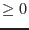

| Parameter | Mand | Type | Default | Constraints |
| tssettabname | yes | dataset | | |
Name of the input FITS data set and table, the latter of which can be added, following the `:', such as, `input1.ds:EVENTS'.
|
| xcol | no | string | TIME | |
Column name of X-axis.
|
| ycol | no | string | default | |
Column name of Y-axis.
|
| fracexpcol | no | string | FRACEXP | |
Column name of FRACEXP.
|
| tsstyle | no | string | auto | auto|rate|count |
Style of the input time-series.
|
| withstarttime | no | boolean | no | |
Whether start time is specified (Default: No).
If yes, the task reads starttime.
|
| starttime | yes | real | | |
Start time to evaluate.
|
| withendtime | no | boolean | no | |
Whether end time is specified (Default: No).
If yes, the task reads endtime.
|
| endtime | yes | real | | |
End time to evaluate.
|
| fracexpstyle | no | string | auto | auto|calc|threshold|none |
Style of handling method of FRACEXP.
If threshold, the task reads fracexplower.
|
| fracexplower | yes | real | | |
Lower threshold for FRACEXP to be used in the calculation.
|
| withlowercutoffcount | no | boolean | no | |
Whether the lower cutoff count (or rate) is specified.
If yes, the task reads lowercutoffcount.
|
| lowercutoffcount | yes | real | 0.0 |  |
The lower threshold count or ratio in search for the optimum value, that is, any bin having the count (or ratio) equal to, or smaller than, this value is not taken into account in the search. This value has to be either zero or positive.
|
| withmintimeratio | no | boolean | no | |
Whether the minimum time ratio is specified.
If yes, the task reads mintimeratio.
|
| mintimeratio | yes | real | 0.05 | |
The ratio of the acceptable minimum number of (time) bins (or row numbers in the FITS table) to the initial number of bins after other filtering is applied, during the search for the optimum value. If the search does not find the optimum threshold with larger number of bins, then the task raises an error and exits.
|
| ignorelowcnttail | no | boolean | no | |
If yes, the lower-count tail is ignored and the best local maximum is used to derive the output threshold, when smaller the background count (rate) threshold is, better the statistics will be. Otherwise, in those cases, an error noThresholdFound is issued, unless the number of bins that contains the smallest count consists more than the third of the entire light-curve.
|
| doinsertkwds | no | boolean | no | |
Whether inserting the header attributes in the input time-series dataset.
If yes, the (header of the) input time-series dataset will be modified.
|
| dooutputsntab | no | boolean | no | |
Whether outputting the table of signal-to-noise ratio etc (see text for detail) to the cutoff rate/count.
|
| snsettabname | no | dataset | sntobkgcut.ds:SN_TO_BKGCUT | |
Name of the output table of signal-to-noise ratio to the cutoff rate/count in the form of ``FILE.fits:TABLENAME''.
|
| Parameter | Mand | Type | Default | Constraints |